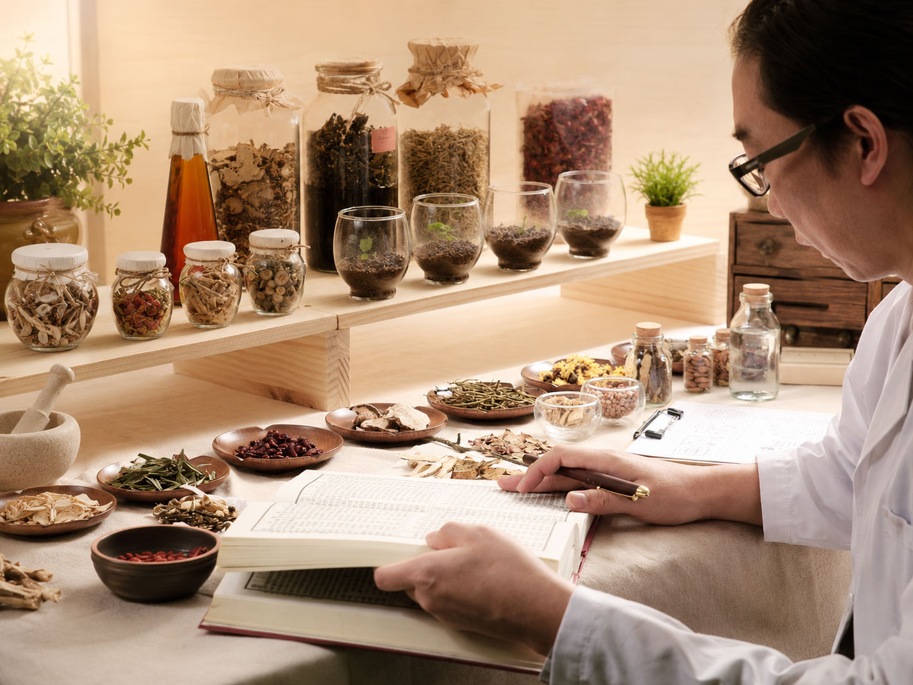

BRAND PROPOSITION
认识京颐养方
京颐养方由合肥京东方医院中医科团队、临床药师、营养师等团队携手研发，围绕药食同源、草本生活与健康礼赠等场景，构建覆盖日常饮用、生活用品与礼赠定制的中医养生产品体系。

NINE CONSTITUTION TEA
九种体质茶
一茶一方，按体质选择日常轻养茶饮。
Featured Collections
特色产品系列
Product Library
所有产品
当前显示 0 项
产品体系
产品系列
使用场景
暂无匹配产品，可尝试切换筛选条件或清空关键词。
Health Experience
从产品到场景的中医健康体验
企业健康活动
组合专家科普、员工关怀、节令主题活动和产品试饮，服务企业健康福利与客户维护。
中医养生市集
适配健康市集、品牌快闪、社区活动，让茶饮、草本生活用品与礼盒组合形成现场体验。
线下体验店合作
面向院内专柜、商超、社区及合作门店，承接产品陈列、试饮体验与品牌展示。
Corporate Wellness
企业养生产品定制
从办公室茶饮、家庭常备、睡前香养到企业养生礼定制，京颐养方以产品组合的方式回应不同人群和预算需求。
员工健康关怀定制
适合员工福利、客户维护、主题关爱活动，可根据预算、节点、人群和活动主题灵活搭配。
健康关爱礼定制
围绕女性关爱、睡眠舒缓、节令养生等主题，组合茶饮、草本生活用品与御养礼品。